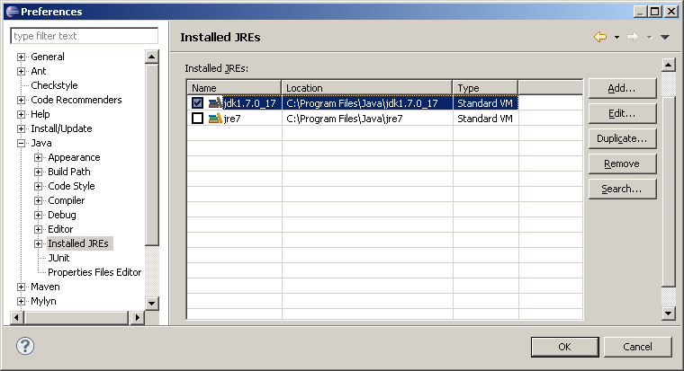
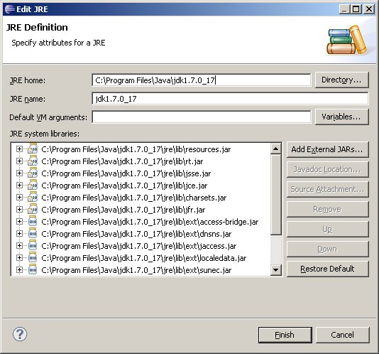
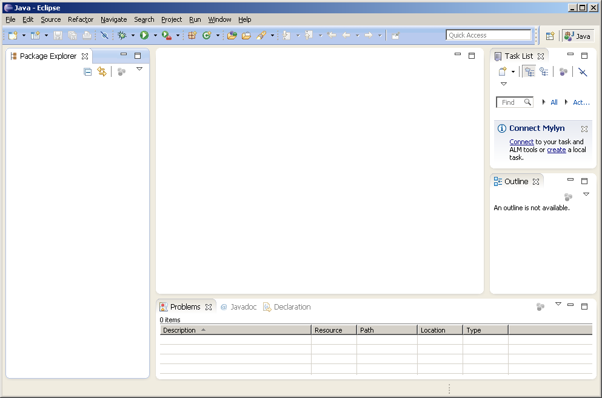
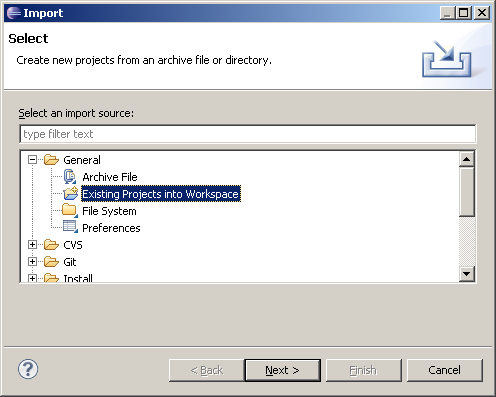
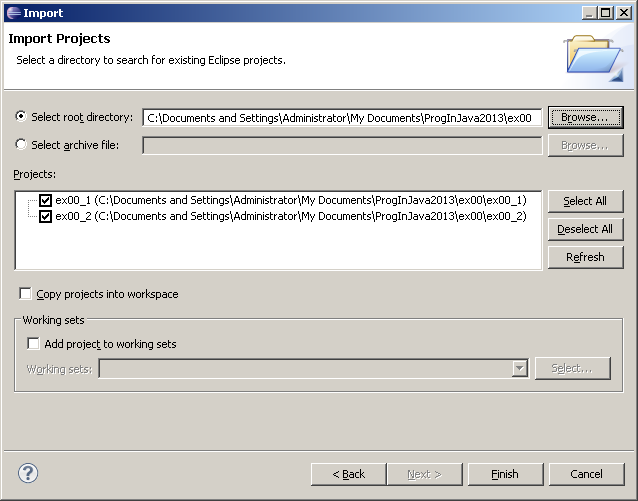
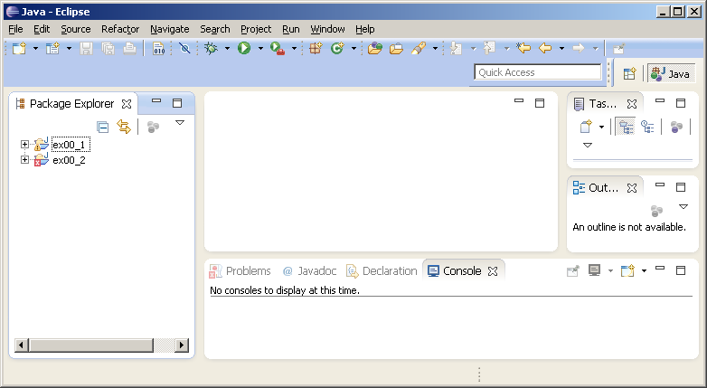

Programmieren in Java : Installation und Einrichtung von Eclipse und dem ersten Übungsblatt
Installation und Einrichtung von Eclipse und dem ersten Übungsblatt
Ziel
Lauffähige Umgebung mit Eclipse und dem ersten Übungsblatt
Schritte
Legen Sie einen Ordner an, indem Sie Ihre Abgaben ablegen möchten. Nehmen wir
an, der Name des Ordners sei ProgInJava2013.
Download der Übung
Laden Sie das Übungsblatt Ex00 herunter.
Entpacken Sie das Übungsblatt direkt im Ordner ProgInJava2013. Die Ordnerstruktur muss so aussehen:
ProgInJava2013 \- ex00 |- ex00.pdf |- ex00_1 |- ... \- ex00_2 |- ...
Dabei besteht eine Übung immer aus einem PDF (ex00.pdf), in dem die Aufgabenbeschreibung steht, und Projektvorlagen (ex00_1, ex00_2,...) die Eclipse-Projekte enthalten. Es sind noch weitere Dateien enthalten, die momentan ignoriert werden sollen. Diese Struktur dürfen Sie nicht verändern.
Installation des Java Development Kit (JDK)
Installieren Sie ein Java Development Kit entsprechend Ihrer Plattform.
Um festzustellen ob Sie schon ein JDK installiert haben genügen im Normalfall folgende Schritte:
- Windows:
C:\Program Files\Java\jdk*existiert - Linux/Mac OS:
javackann auf der Konsole aufgerufen werden
Download eines Eclipse-Bundles
Laden Sie sich von der Bundles-Seite ein Eclipse entsprechend Ihrer Plattform herunter. (Entsprechende Hinweise, wenn Sie ein schon vorhandenes Eclipse verwenden möchten finden sich dort auch.)
Hinweis: Der Windows-Entpacker bringt Fehler aufgrund langer Dateinamen. Verwenden Sie besser 7zip oder ähnliches.
Entpacken Sie dies an einem Ort Ihrer Wahl (aber nicht innerhalb ProgInJava2013!).
Starten Sie ./eclipse (Linux), eclipse.exe (Windows), Eclipse.App (Mac OS) von diesem Ort.
Den Standardworkspace können Sie einfach akzeptieren.
Nur Windows
Gehen Sie auf Windows, Preferences, Java, Installed JREs, Add und fügen Sie Ihr gerade Installiertes JDK hinzu.
Dies liegt normalerweise unter c:\program files\java\jdk1.7.0_17 (je nach versionsnummer leicht unterschiedlich).
Sie müssen nur den Eintrag JRE Home anpassen.


Fügen Sie eine neue Umgebungsvariable hinzu:
Start, Systemsteuerung, System, Erweiterte Einstellungen, dann unter Umgebungsvariablen unten (systemweit) Neu eine neue
Variable anlegen.
Name: JAVA_HOME Inhalt: C:\Program Files\Java\jdk1.7.0_17 (je nach Versionsnummer leicht unterschiedlich)
Anschließend Eclipse neu starten!
Import eines Projekts
Alles nun folgende gilt für alle Plattformen, egal ob Linux, Windows, Mac OS.
Nach dem Start von Eclipse sehen Sie ein leeres Eclipse-Fenster (oder einen Willkommensbildschirm, den Sie schliessen können.)

Importieren Sie die Projekte des 0.ten Übungsblattes. Dazu wählen Sie in Eclipse: File, Import. Dann General, Existing Projects.

Jetzt wählen Sie den Ordner ex00 Ihres oben ausgepackten 0.ten Übungsblattes aus und die vorgefertigten Projektvorlagen können importiert werden. Sie müssen ex00_1 und ex00_2 importieren.
Achten Sie darauf, dass der Haken "Copy projects into workspace NICHT selektiert ist.

Nach dem Import sollten Sie 2 neue Projekte links haben:

Das erste Projekt erscheint fehlerfrei, das zweite enthält Fehler. Fahren Sie mit der Bearbeitung des 0.ten Übungsblatt
fort. Sie finden es als ex00.pdf in ProgInJava2013/ex00/ex00.pdf.
Diese Blatt müssen Sie vorerst nicht abgeben.